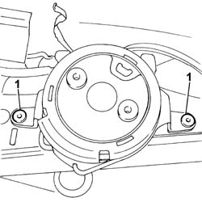
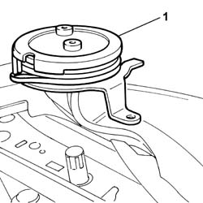

7045A34 MANUAL DEVICE FOR ADJUSTING SEAT HEIGHT - R R WITH SEAT REMOVED
- Path
- Procedures > 70 FITTINGS > 7045 FRONT SEATS > 7045A FRONT SEAT ASSEMBLY > 7045A34 MANUAL DEVICE FOR ADJUSTING SEAT HEIGHT - R R WITH SEAT REMOVED
- Kind
- repair procedure (removal / refitting; the operation number is the code)
- Applies to
- all engines; all production periods
- Interactive page
- https://sloeber94.github.io/elrnDB-fUlss/en/#/179007846
Applies to: all engines; all production periods
 Removing
Removing
 Refitting
Refitting- Raise the seat cushion to the end of travel position.
Op. 7045A56 LEVER CONTROLLING DRIVER'S SEAT HEIGHT ADJUSTMENT DEVICE - R.R .
Op. 7045A44 SEAT INTERIOR GUARD - R R
- Remove the side part of the seat cushion fabric.
1. Using a drill, remove the rivets fastening the manual device to the seat cushion frame.

Applies to: all engines; all production periods
1. Remove the driver's seat manual height adjustment device.

Applies to: all engines; all production periods
Refitting
Removing- Fit the driver's seat manual height adjustment device.
- Using a drill, fasten the rivets securing the manual adjustment device to the seat cushion frame.
- Reposition the side part of the seat cushion fabric correctly and check that the device is working properly.
Op. 7045A44 SEAT INTERIOR GUARD - R R
Op. 7045A56 LEVER CONTROLLING DRIVER'S SEAT HEIGHT ADJUSTMENT DEVICE - R.R .
Op. 7045A13 FRONT SEAT WITH SIDE BAG R R
Op. 7045B10 L/H OR R/H FRONT SEAT HEAD RESTRAINT - R+R
Op. 7045D82 REAR TRIM FOR RIGHT FRONT SEAT CABLE LOOM - R.& R.